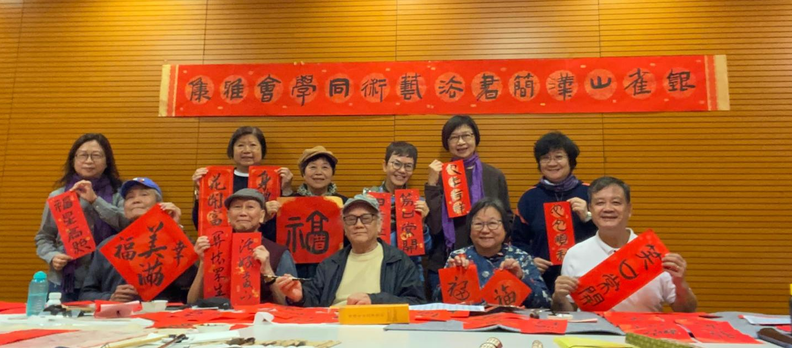

「銀雀山漢簡書法藝術同學會」在2024年10月成立，以「傳承中華文化，弘揚漢簡書法藝術」為核心宗旨，凝聚海內外漢簡書法愛好者，開展書法研習、作品交流及多元文化活動。
本會榮譽創會會長是香港書法家陳定璟老師, 陳老師鑽研銀雀山漢簡書法三十餘載，並於二零一八年開班教學，是香港首個專注漢簡的書法班，至今課程已持續七年，累計學員數百人。

會長陳寅添（WhatsApp 60915272） 副會長葉潔華 （WhatsApp 90362195)